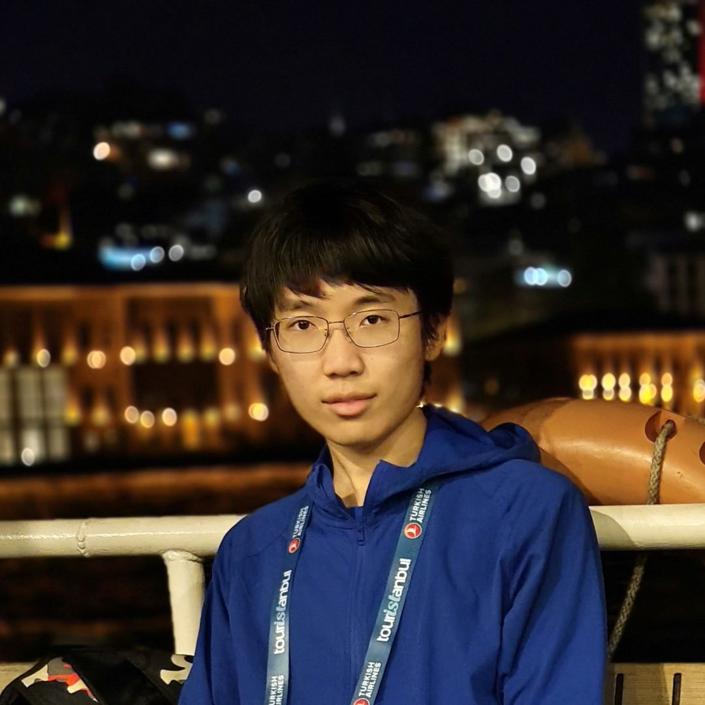
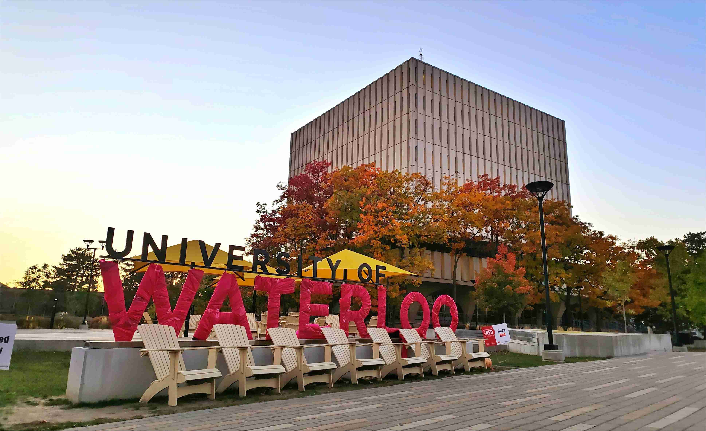
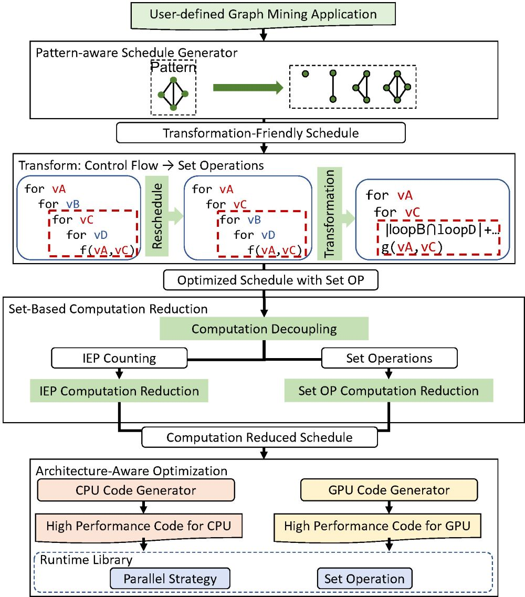
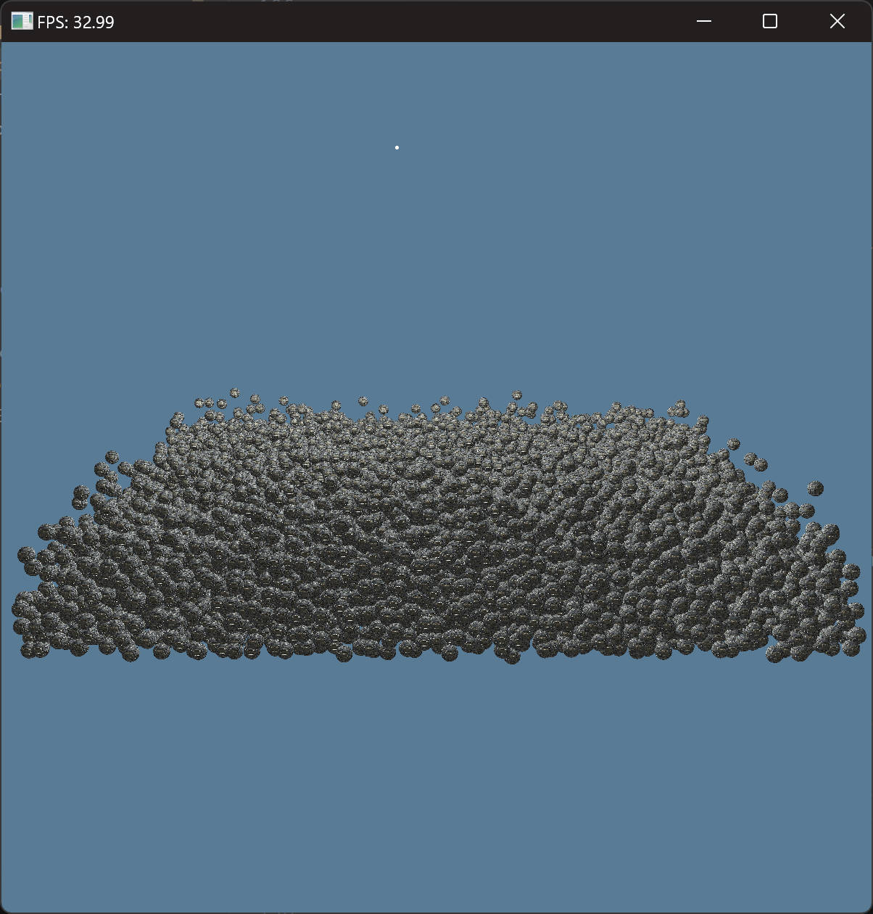
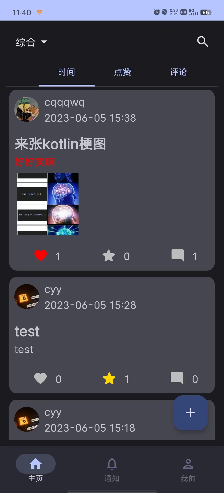
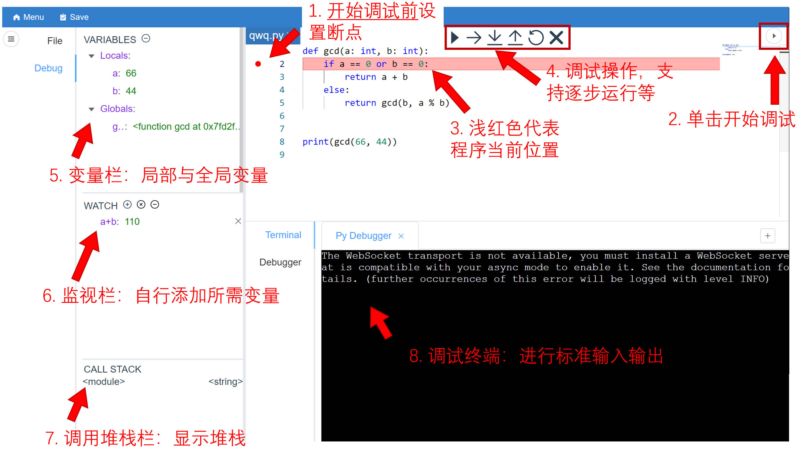
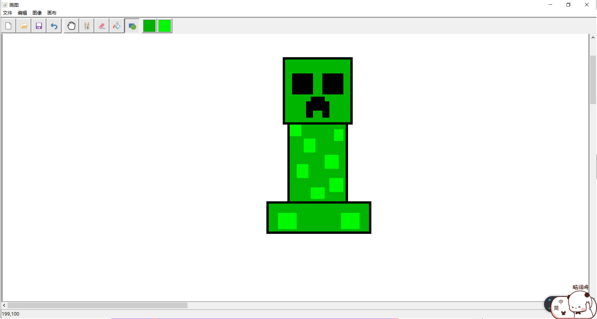
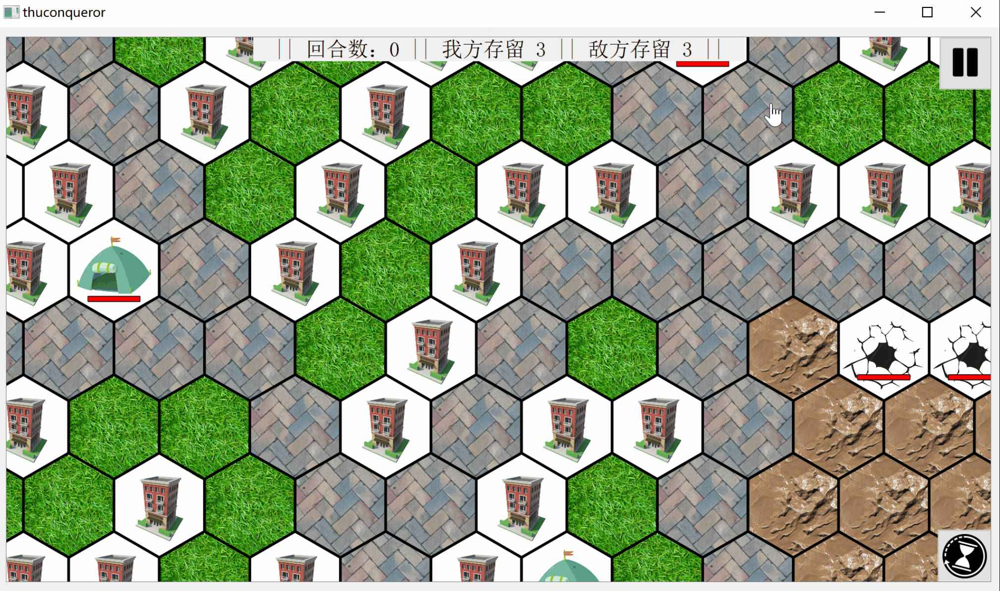
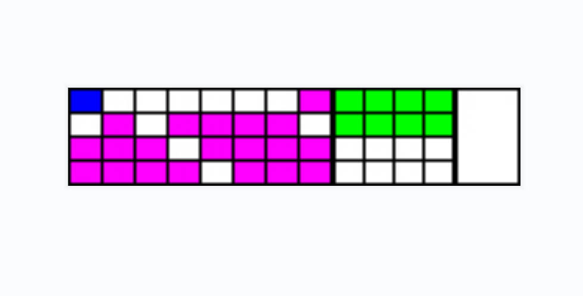
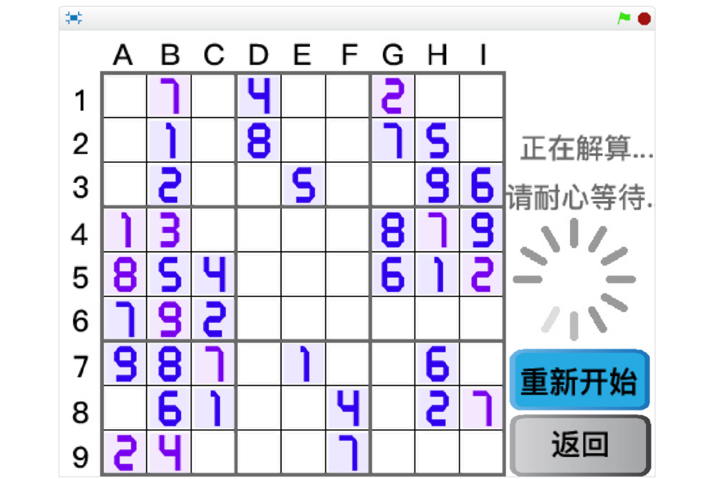

ML Infra Engineer
2026.8 - Present
JQ Investments

Stay simple, stay naïve.
Hello! My name is Chen Qiqian [陈启乾] ("Qiqian Chen" is my name in western name order). I am a software engineer focused on ML infrastructure and distributed systems, experienced in C++/CUDA/Python, GPU systems, and performance optimization.
Click below to download my CV:
CV (English) CV (Chinese)JQ Investments
ByteDance
Participated in the development and optimization of large-scale distributed recommendation training frameworks:
I entered Tsinghua University in Fall 2020, majoring in Software Engineering at the School of Software as an undergraduate student.
My cumulative GPA is 3.77 out of 4, ranked in the top 30% of the School of Software.
Selected high-scoring courses (A- and above):

I took the following five courses, and my term average was 89.8 out of 100:
I am proud to have attended one of China's most prestigious high schools, the High School Affiliated to Renmin University of China (RDFZ). I spent two years training for the National Olympiad in Informatics (NOI), and won a Provincial First Prize in NOIP in 2018.
Overall, my research interests lie in optimizing and improving computer software systems to facilitate and scale real-world applications:
The following section introduces my industry and research experience.
Tsinghua University
ALCHEM Lab, Purdue University
Risk Management Technologies Department, Digital Finance, Ant Group
Student Research Training Program (SRT), Tsinghua University
Pacman Lab, Tsinghua University

I focused on developing a graph mining system that could efficiently leverage heterogeneous hardware (CPU and GPU). I explored algorithmic and architectural optimization strategies for various graph mining applications, with a particular emphasis on Pattern Matching and Frequent Subgraph Mining (FSM). Specifically, I designed and implemented dynamic parallel strategies to optimize the search tree widths of frequent patterns that form a tree by their vertex numbers. Through this approach, I achieved efficiency improvements of up to several hundred times in extreme cases.
GraphSet: High Performance Graph Mining through Equivalent Set Transformations.
Tianhui Shi, Jidong Zhai, Haojie Wang, Qiqian Chen, Mingshu Zhai, Zixu Hao, Haoyu Yang, Wenguang Chen.
I enjoy collaborating with others on projects, and I have had the opportunity to work on several course and personal projects spanning from my time in high school to the present day.

GPU-accelerated particle collision detection, physics update, and real-time rendering using Rust, wgpu, and WGSL compute shaders. Used uniform grid spatial partitioning with GPU Bitonic Sort to build cell indices, reducing candidate pair checks from O(n²) to approximately O(n). Adapted to Vulkan / Metal / OpenGL / DX backends via wgpu; achieved ~40 FPS with 5,000 spheres.

A campus forum app built with Kotlin / Jetpack Compose + Material3 and Django, supporting rich text, images, videos, likes, bookmarks, and sharing. I designed the Android frontend architecture and client-server protocol, and implemented the rich-text editor, video player, and WebSocket-based real-time chat & notifications via Django Channels.

A browser-based Python IDE with Vue 3 and Flask, featuring project file management, multi-file editing with split panes, code execution, a web terminal, and PDB-based breakpoint debugging. I led the system architecture and module integration, designed the Monaco Editor module (multi-model state, split panes, tabs, file-tree sync, breakpoint markers), and integrated python-lsp-server via WebSocket for code completion and diagnostics. Deployed with Docker Compose, Nginx, and GitHub Actions.
A mock website of Tsinghua University's campus network, built with Vue to practice front-end development fundamentals.
A C-to-LLVM compiler using ANTLR4 and the Python llvmlite package. Implemented scoped symbol tables, type conversion, and LLVM IR generation; supported variables, arrays, functions, recursion, branching, loops, pointer parameters, and external function calls, with automated compilation tests.

An ~2,000-line Windows drawing program written in MASM with Win32 API / GDI. Supported pen, eraser, fill, shape drawing, zoom & drag, undo, and BMP read/write. Used double buffering to reduce screen flicker.

A turn-based strategy chess game built with C++ and Qt Graphics View Framework. Supported multiple levels, map serialization, and game progress save & restore.

As team lead, I designed the overall architecture and implemented the instruction executor for a C++ RISC instruction set simulator. It modeled registers, memory, stack, and jump control, with breakpoint debugging, state inspection, code validation, and memory visualization. Ran an O(n log n) prime sieve test program, executing ~29 million simulated instructions.

A sudoku solver written in Scratch. I regard this as the starting point of my programming journey.